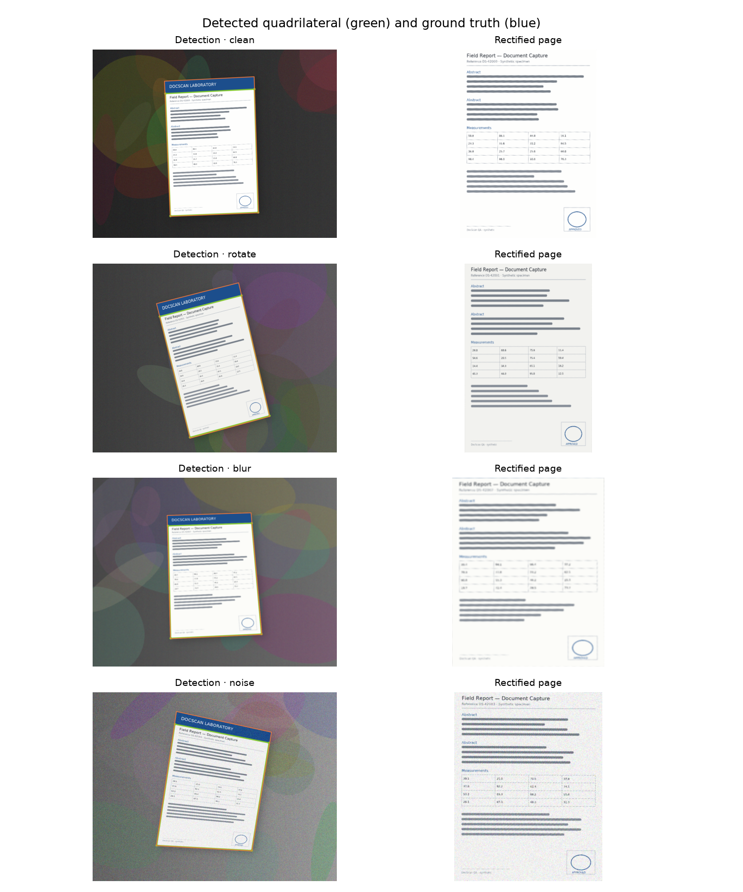
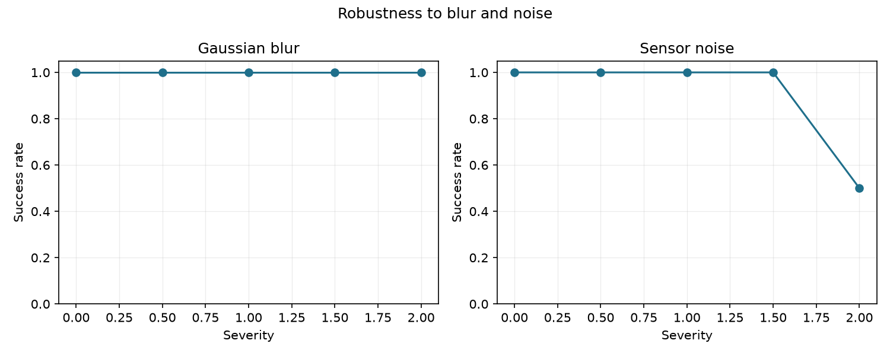
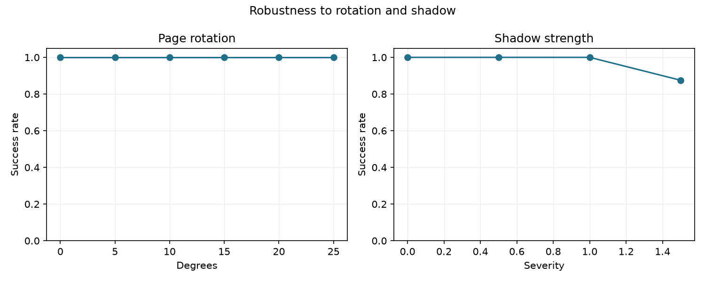
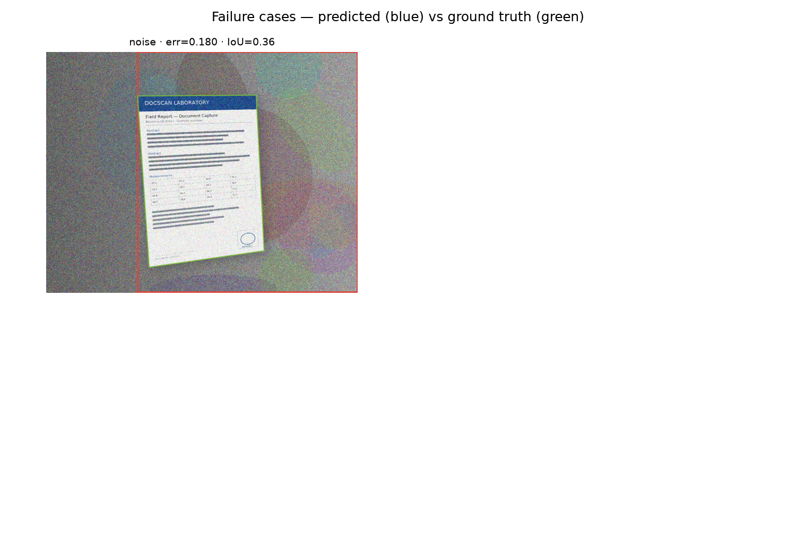

DocScan CV
Classical computer vision for document capture: corner detection, perspective rectification and geometry-based evaluation on synthetic scenes.
Strict success99.2%
Mean IoU0.895
Median corner error0.020
Mean runtime76.0 ms
Scenes120
Detection by condition
| condition | samples | success_rate | corner_success_rate | iou_success_rate | median_corner_error | mean_iou | mean_runtime_ms |
|---|---|---|---|---|---|---|---|
| clean | 20 | 1.0 | 1.0 | 1.0 | 0.02 | 0.899 | 75.916 |
| rotate | 20 | 1.0 | 1.0 | 1.0 | 0.02 | 0.898 | 75.551 |
| blur | 20 | 1.0 | 1.0 | 1.0 | 0.019 | 0.906 | 73.94 |
| noise | 20 | 0.95 | 0.95 | 0.95 | 0.02 | 0.872 | 78.767 |
| shadow | 20 | 1.0 | 1.0 | 1.0 | 0.019 | 0.9 | 76.278 |
| lowcontrast | 20 | 1.0 | 1.0 | 1.0 | 0.02 | 0.896 | 75.345 |
Examples

Robustness


Failure analysis
